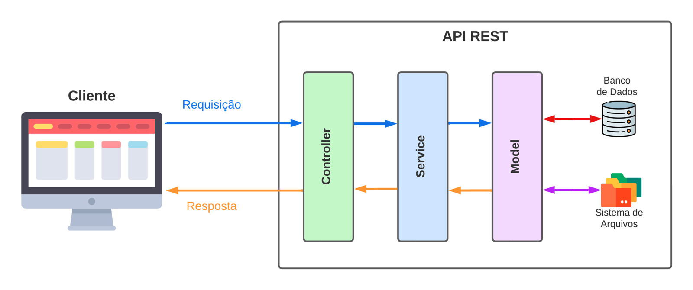

6.3 - Arquitetura em Camadas: Model, Service e Controller
Vamos aplicar a Arquitetura em Camadas para organizar nosso código. Usando a analogia das gavetas, aqui cada camada representa uma "gaveta" onde guardamos partes do código com uma responsabilidade bem definida. Em nosso exemplo, teremos três camadas principais: Model, Service e Controller.
A figura a seguir representa a organização das camadas.

Visão da arquitetura em camadas dividida entre: Model, Service e ControllerCamada Model
A camada Model é onde o código relacionado ao acesso a dados é agrupado. Imagine uma gaveta onde você armazena todas as ferramentas que interagem diretamente com um banco de dados ou com arquivos de dados. Na prática, a camada Model contém funções responsáveis por ler e escrever dados em um banco de dados (como MySQL) ou até em sistemas de arquivos.
Exemplo prático: Se nossa aplicação for uma loja virtual, a camada Model irá conter funções para adicionar novos produtos, atualizar preços, consultar o estoque e remover itens. A Model atua como uma ponte entre a aplicação e o local onde os dados estão armazenados, garantindo que as informações sejam recuperadas e salvas corretamente.
Camada Service
A camada Service é onde as regras de negócio da aplicação são definidas. Pense nela como uma gaveta que agrupa as instruções sobre o funcionamento interno do sistema. Aqui, é onde as lógicas de "como" e "quando" uma operação deve acontecer são aplicadas.
Exemplo prático: Voltando ao exemplo da loja virtual, a camada Service pode conter uma função que calcula descontos promocionais. Suponha que o site oferece um desconto de 10% para compras acima de R$100,00. A camada Service cuidará dessa regra de negócio, verificando o valor do pedido e aplicando o desconto quando necessário, sem precisar se preocupar com os detalhes de como o pedido será armazenado no banco de dados.
Camada Controller
Por fim, temos a camada Controller, responsável pela interação entre o usuário e a aplicação. Essa camada atua como a interface entre as requisições externas e o sistema interno, validando as informações recebidas e repassando-as às camadas adequadas.
Exemplo prático: Na loja virtual, ao receber uma requisição de cadastro de produto, o Controller é responsável por receber os dados do produto enviados pelo cliente (via uma requisição HTTP, por exemplo), validar esses dados, e então encaminhar a solicitação à camada Service para aplicar qualquer regra de negócio (como aplicar impostos ou verificar disponibilidade) e, finalmente, pedir à camada Model para armazenar o produto no banco de dados.
OBS da IA
Para o SAP CAP
- Mapeamento para o CAP: Model → entidades CDS em
db/*.cds; Service → definição emsrv/*.cds(projeções) + regras de negócio emsrv/*.js; Controller → não existe, os adaptadores de protocolo do CAP (OData/REST) recebem a requisição e montam a resposta. - Os ganchos
before(validar/rejeitar),on(substituir a implementação) eafter(enriquecer o resultado) substituem a maior parte do código das três camadas.
Minhas anotações
Atalhos: ← → navegar · Ctrl K ou / buscar